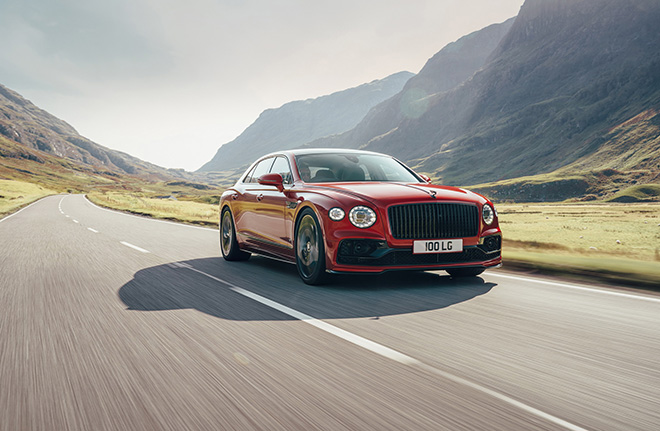
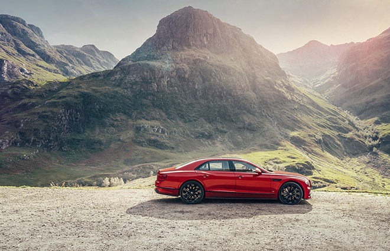
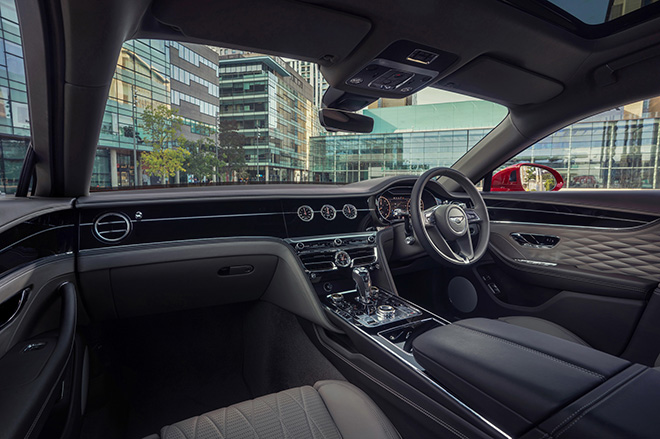

Ở phiên bản mới, Bentley Flying Spur V8 vẫn duy trì kích thước như trước với chiều dài cơ sở lên đến 3.194 mm và chiều dài tổng thể 5.316 mm. Ngoại hình xe cũng không có quá nhiều thay đổi. Đầu xe vẫn trang bị lưới tản nhiệt đặc trưng cùng đèn pha LED tạo hình mặt cắt pha lê sang trọng. Riêng ở phía sau, bản V8 trang bị ống xả từ thay vì ống xả kép như bản W12. Phiên bản mới cũng lược bỏ bớt 10 màu tùy chọn ngoại thất, chỉ còn 7 màu cho khách hàng.
Bentley Flying Spur V8 nhẹ hơn 100 kg so với biến thể W12. Ngoài nguyên nhân đến từ việc chiếc xe “gánh” động cơ nhỏ hơn bản W12, phần lớn trọng lượng giảm xuống từ mũi xe, giúp chiếc xe nhanh nhẹn và phản ứng nhạy hơn với các tương tác của người lái. Từ đó, Bentley Flying Spur V8 có thể khiến hành khách thích thú hơn khi ngồi sau vô lăng thay vì ngồi hàng ghế sau. Điểm khác biệt còn nằm ở bộ mâm kích thước 20 inch, thay cho mâm 21 inch như bản W12. Người mua có thể lựa chọn gói trang trí Blackline Specification để bổ sung các điểm nhấn tối màu cho ngoại hình xe.
Bên trong nội thất, Flying Spur V8 vẫn đáp ứng được tiêu chí sang trọng của một chiếc Bentley. Khoang cabin được trang trí bằng gỗ Óc chó Crown Cut, nhưng người mua cũng có thể chọn từ bảy loại vân gỗ khác hoặc sợi carbon có độ bóng cao. Màn hình thông tin giải trí dạng lật cũng có sẵn dưới dạng tùy chọn. Hàng ghế sau trang bị tủ lạnh mini có khả năng chứa hai chai sâm panh. Bentley Flying Spur V8 có thể được tùy chọn với cấu hình 4 hoặc 5 chỗ ngồi và với danh sách tùy chọn tùy vô tận để khách hàng thỏa sức cá nhân hóa
Bentley Flying Spur V8 trang bị khối động cơ V8, dung tích 4.0L tăng áp kép tương tự như mẫu xe Continental GT, cho công suất 542 mã lực và mô men xoắn cực đại đạt 700 Nm. Động cơ V8 trên cũng trang bị hệ thống ngắt xi-lanh, hoạt động trong điều kiện tải nhẹ, cải thiện khả năng tiết kiệm nhiên liệu. Bentley tuyên bố rằng Flying Spur V8 có khả năng đạt vận tốc 0-100 km h trong 4,1 trước khi chạm mốc tối đa 318 km/h.
Bentley Flying Spur hiện tại trang bị động cơ W12 6.0L tăng áp kép sản sinh công suất 626 mã lực và mô-men xoắn 900 Nm. Xe trang bị hộp số tự động tám cấp và hệ dẫn động bốn bánh. Khối lượng xe rơi vào khoảng 2,5 tấn. Theo đó, mẫu xe sang Anh Quốc cần 3,8 giây để đạt vận tốc 100 km / h và có tốc độ tối đa là 333 km/h.
Flying Spur V8 mới trang bị các thanh chống lật dạng rỗng phía trước và phía sau tiêu chuẩn kết hợp hệ thống kiểm soát chống lật chủ động 48 volt của Bentley được cung cấp dưới dạng tùy chọn. Các tính năng tiêu chuẩn khác bao gồm hệ thống treo khí nén ba buồng thích ứng, phân bổ momen xoắn riêng lẻ cho bánh trước/sau và hệ thống kiểm soát chế độ lái (Dynamic Driving Control). Khách hàng cũng có thể tùy chọn hệ thống đánh lái cả 4 bánh để cải thiện độ ổn định ở đường cao tốc và khả năng cơ động trong đô thị.
Những đơn đặt hàng đầu tiên cho Bentley Flying Spur V8 đã được ghi nhận. Mẫu xế sang nước Anh dự kiến sẽ bắt đầu được giao hàng vào cuối năm 2020 tại Anh và Châu Âu. Các thị trường toàn cầu khác sẽ theo sau vào năm 2021. Với việc lắp động cơ V8, Bentley Flying Spur sẽ dễ dàng tiếp cận với các thị trường đánh thuế cao những dòng xe có dung tích động cơ lớn tại châu Á.